Visual map gallery. Open individual Excalidraw JSON files to edit the elements; SVGs are previews.
Conceptual product ecosystem · baseline domains plus proposed sub-capabilities
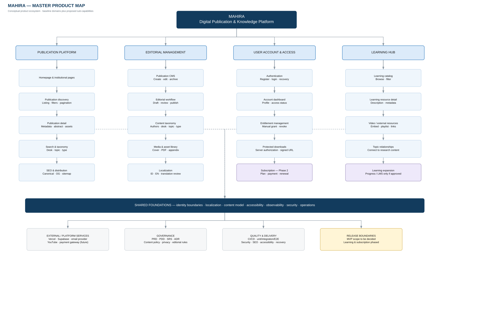
Parent → domain → module → capability · [P] proposed detail, [TBD] needs validation
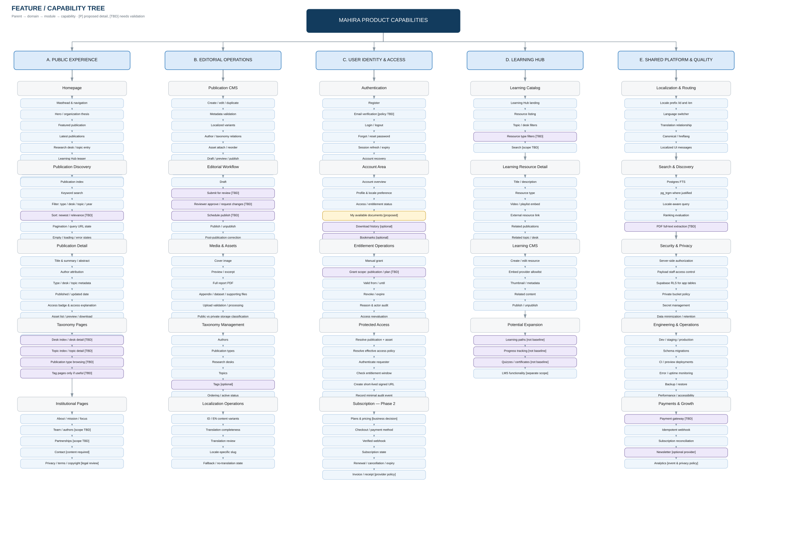
Proposed information architecture · public / account / internal · locale routes
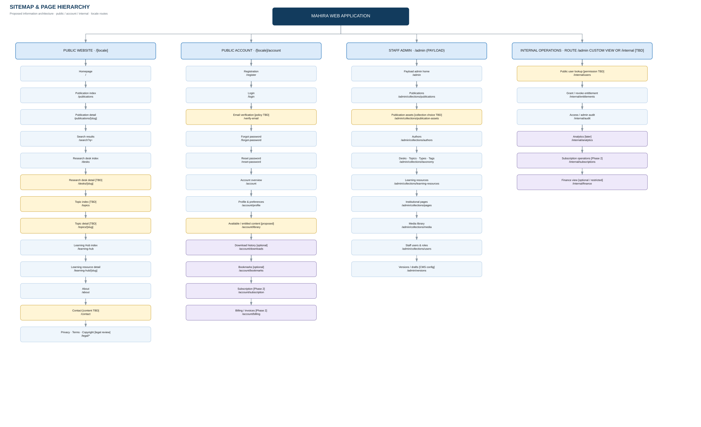
Access capability map · staff access to exclusive publications remains an explicit policy decision
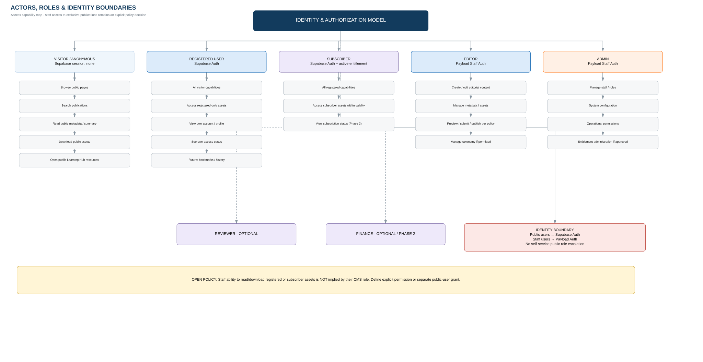
Three journeys · public discovery, gated access, and account lifecycle
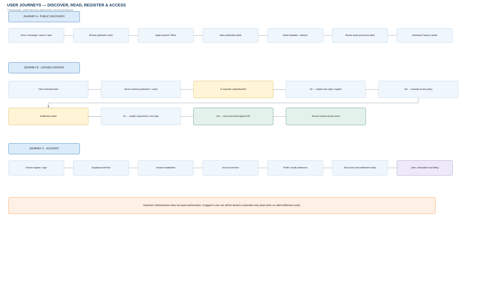
Proposed state machine; review and scheduling are open decisions (PRD D-05)
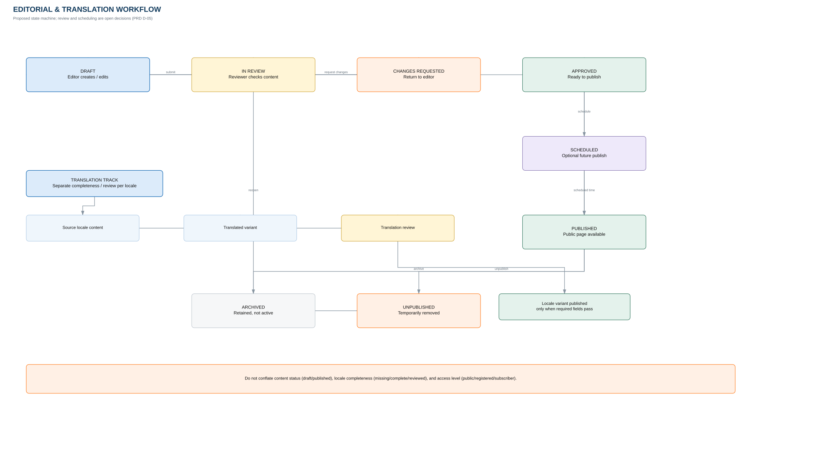
Editorial concepts and relationships · validate cardinalities with real content samples
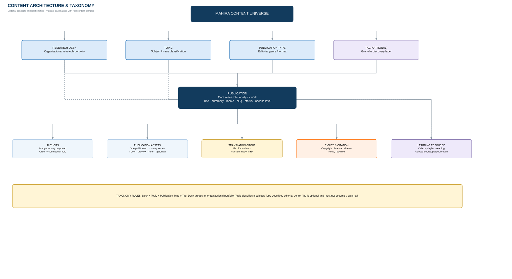
Logical domains, relations and system-of-record boundaries · not physical schema freeze
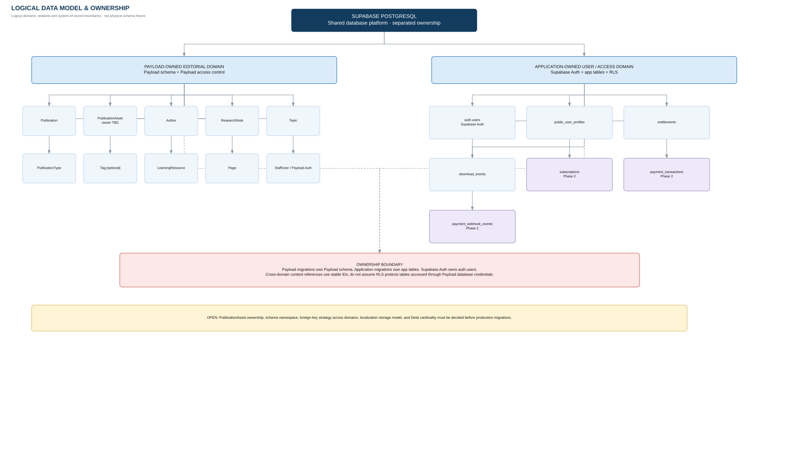
Logical relationship map · associative entities show proposed many-to-many relationships; validate cardinality
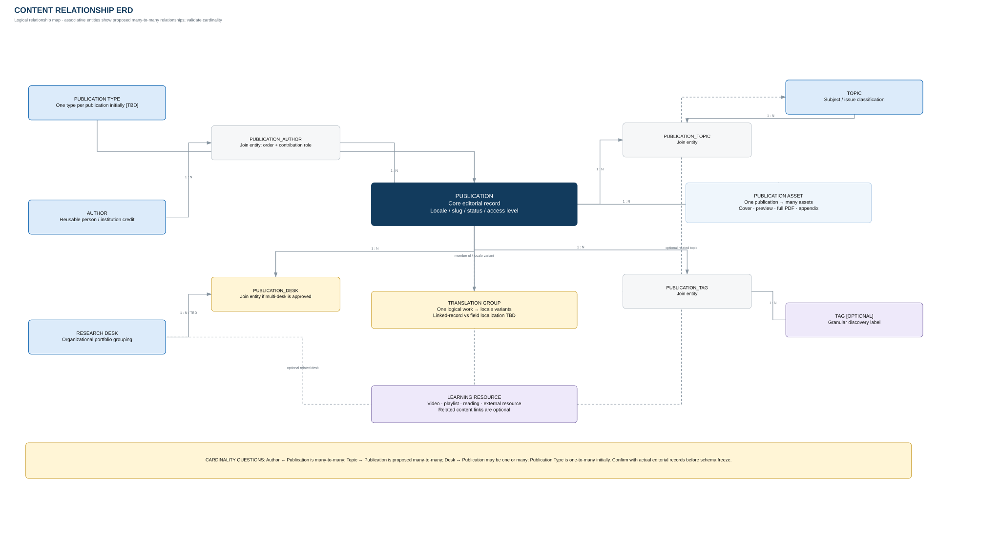
Supabase application domain · subscription entities are Phase 2; content references stay policy-controlled
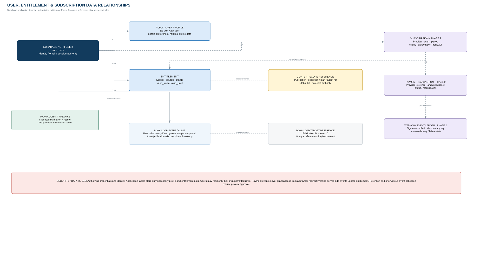
Logical deployment and data flows · Vercel + Supabase is proposed, subject to spike and cost validation
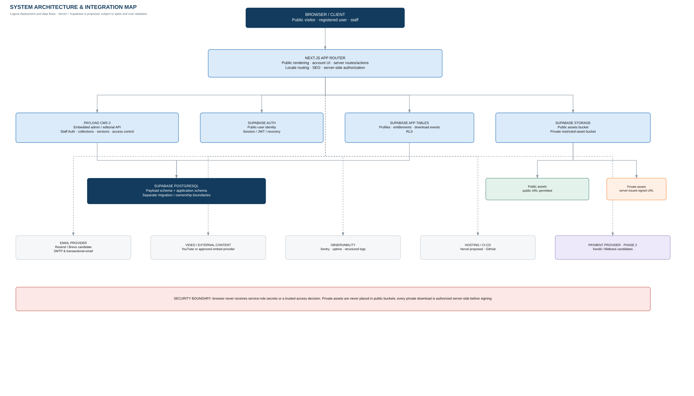
Recommended deny-by-default sequence · publication policy plus optional asset override
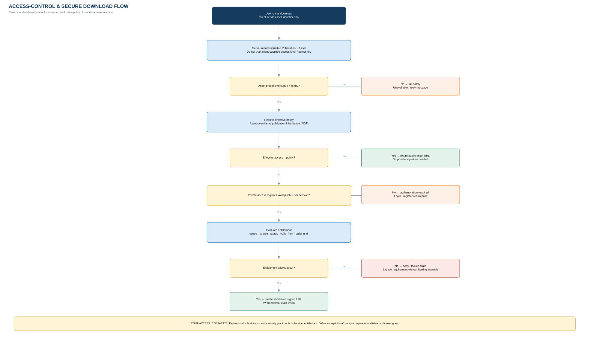
Phase 2 boundary only · manual entitlement operations can precede payment integration
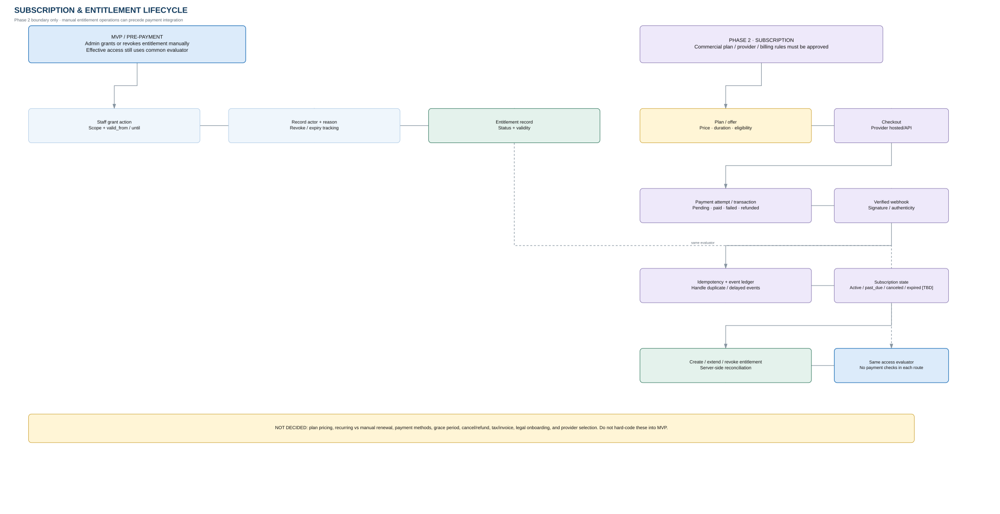
Docs → technical proof → end-to-end slices → hardening → expansion
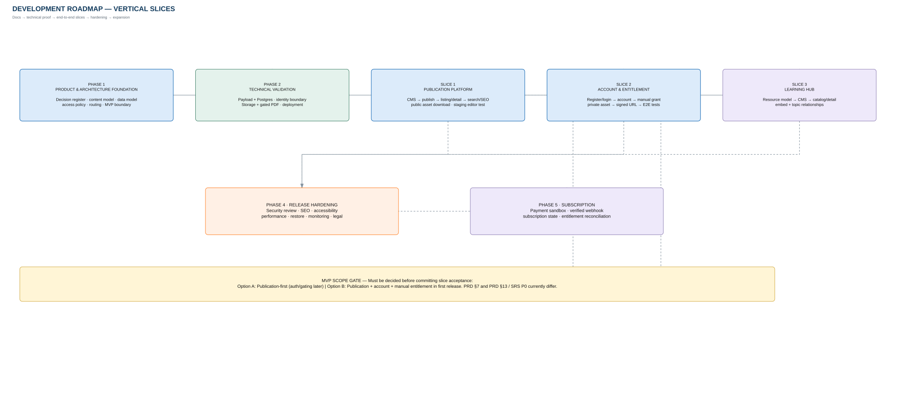
Use as a workshop board: decide, assign owner, record evidence, then update DECISIONS.md / ADR
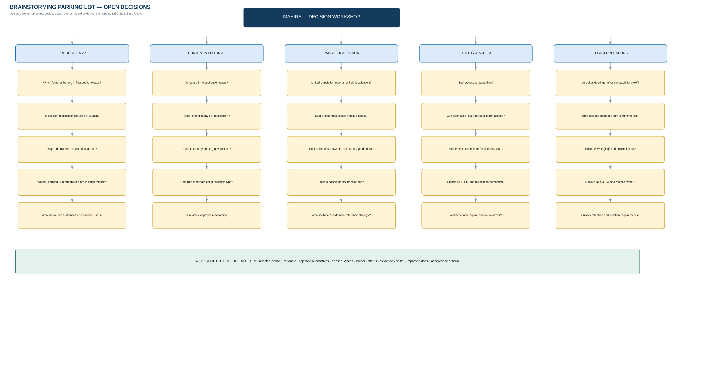
A traceability chain for consistency and change impact
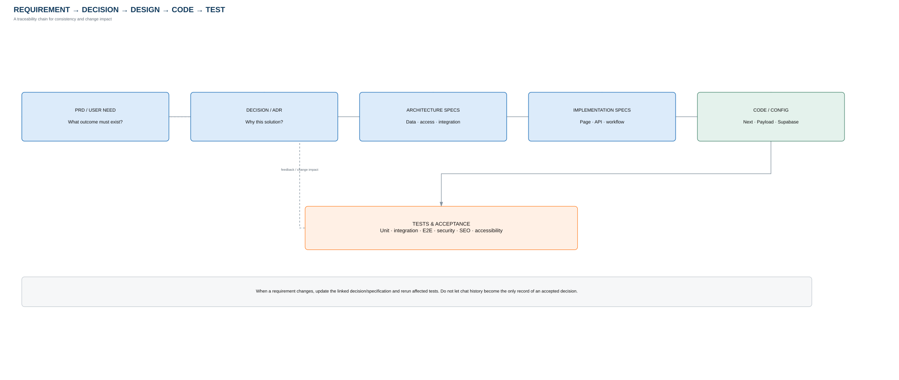
Block-level planning board · page structures are proposed wireframe inventories, not final visual design
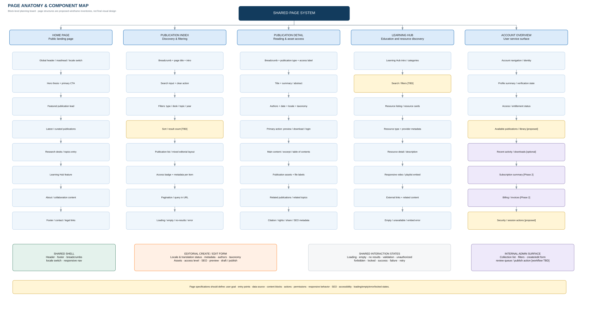